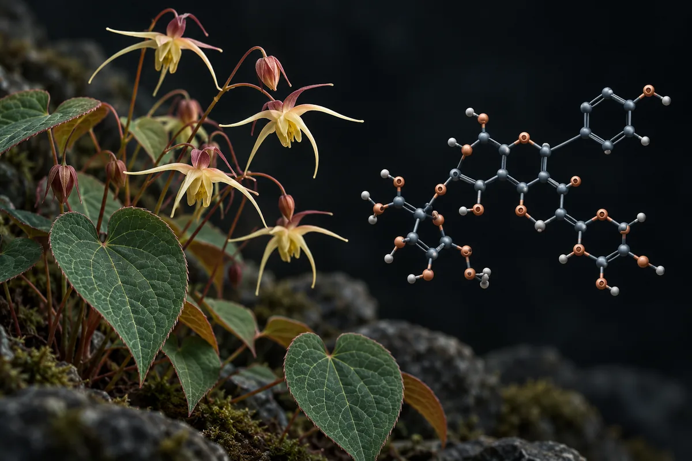

Epimedium (icariina, "horny goat weed")
A prova de que a icariina age como a tadalafila vem de enzima isolada e de ratos; tomada por boca, ela ficou abaixo do limite de detecção no sangue em dois estudos humanos.

Experimental material. Read before using anything from here.
Nothing on this page is a medical recommendation, prescription or treatment plan. It is an organized translation of protocols circulating in research communities and, where it exists, of what published trials tested. The two are marked differently — and they are not equivalent.
Most of the compounds here have no FDA approval for human use. Several are sold labeled "research use only", which means they have not gone through purity, sterility or dosage controls for human consumption. A community-reported dose is not a validated dose: it is what someone reported having done.
Talk to a licensed health professional before considering any of these compounds. If you already use one and feel anything unexpected, seek care — do not wait for the next routine test.
Summary
A icariina é o flavonoide mais citado do Epimedium, planta usada na medicina tradicional chinesa. Em tubo de ensaio, ela inibe a mesma enzima que a sildenafila e a tadalafila, com potência bem menor. Os efeitos sobre ereção e testosterona citados nos vídeos vêm de ratos. Não localizei nenhum ensaio em homens com icariina ou Epimedium sozinhos para disfunção erétil; o único ensaio clínico da busca testa uma mistura de quatro plantas. Em dois estudos humanos, a icariina ficou abaixo do limite de detecção no sangue depois de tomada por boca. No Brasil, não consta da lista de suplementos nem tem registro de medicamento.
Why this page exists
O Epimedium aparece descrito em vídeos curtos sobre saúde masculina que vi publicados na internet, como uma planta que "envergonha o Viagra". A icariina, seu composto principal, inibiria a mesma enzima que a sildenafila e a tadalafila, com "potência perto dos remédios" e "sem colaterais", e ainda aumentaria ou "mimetizaria" a testosterona. As alegações vêm com revistas e autores: Journal of Sexual Medicine, PLOS ONE de 2019, Asian Journal of Andrology de 2006, Phytomedicine de 2009 e uma revisão de 2022. Um dos vídeos acrescenta que a planta seria "banida" na União Europeia, no Reino Unido e na Austrália, e que no Brasil só sairia em farmácia de manipulação.
Eu conferi. Levantei as alegações de 4 vídeos curtos, separei as 20 que são verificáveis e procurei cada estudo citado. Nenhum número desta página veio da fonte secundária do site.
Epimedium é um gênero de plantas chamado em inglês de horny goat weed. Segundo a revisão de Niu e colegas (2022), é usado há muito tempo na medicina chinesa para a atividade sexual. A icariina é um flavonoide prenilado. Segundo a mesma revisão, depois de tomada por boca, 91,2% dela é convertida por bactérias do intestino em outra molécula, a icarisida II.
O mecanismo foi visto em tubo de ensaio e em ratos, não em homens
Três estudos de laboratório mediram a icariina contra a fosfodiesterase tipo 5 (PDE5), a enzima que a sildenafila e a tadalafila inibem. Os números não batem entre si:
- Xin e colegas (2003), com PDE5 extraída de plaquetas humanas: concentração que inibe metade da enzima (IC50) de 0,432 µmol/L.
- Dell'Agli e colegas (2008), com PDE5 humana recombinante: IC50 de 5,9 µM para a icariina, contra 74 nM para a sildenafila. Um derivado modificado em laboratório ficou 80 vezes mais potente que a icariina, perto da sildenafila.
- Chau e colegas (2019), o estudo do PLOS ONE: criaram análogos semissintéticos da icariina. Dois deles chegaram a constantes de inibição de 0,036 µM, "aproximando-se" dos remédios comerciais. A potência perto dos remédios é desses análogos, não da icariina. Os autores declararam pedido de patente sobre eles.
Em animais, Shindel e colegas (2010), o estudo do Journal of Sexual Medicine, deram icariina por 4 semanas a ratos com lesão do nervo cavernoso. As doses baixas melhoraram a pressão dentro do pênis durante estímulo elétrico; uma dose única de 10 mg/kg duas horas antes não melhorou. O estudo de Zhang e Yang (2006), no Asian Journal of Andrology, usou 200 mg/kg por dia em ratos com o sistema reprodutor danificado por quimioterápico, e a testosterona subiu.
O problema é a passagem para o corpo humano. Teo e colegas (2019) deram de 370 a 1.110 mg de extrato padronizado de Epimedium a 30 homens saudáveis. No sangue, apareceram icarisida II e desmetilicaritina; a icariina ficou abaixo do limite de detecção. Yong e colegas (2021) repetiram em 58 mulheres na pós-menopausa, com 740 mg por dia por 6 semanas: de novo, icariina abaixo do limite de detecção. A revisão de Szabó e colegas (2022) descreve a baixa solubilidade e a baixa permeabilidade da icariina como causa de baixa biodisponibilidade.
How much evidence really exists
Os números abaixo foram levantados por mim em 16 de outubro de 2026, no PubMed e no ClinicalTrials.gov. A consulta de cada linha está ao lado do número, para qualquer pessoa repetir e me contradizer.
| Evidence base | Query | Result |
|---|---|---|
| PubMed | icariin | 1.840 artigos |
| PubMed | epimedium OR icariin OR "horny goat weed" | 2.752 artigos |
| PubMed | (epimedium OR icariin OR "horny goat weed") AND (Randomized Controlled Trial[Publication Type] OR Meta-Analysis[Publication Type]) | 28 articles |
| PubMed | (epimedium OR icariin OR "horny goat weed") AND (erectile OR erection OR impotence) | 92 artigos |
| PubMed | (epimedium OR icariin OR "horny goat weed") AND (erectile OR erection OR impotence) AND (rats OR mice OR rat OR mouse) | 45 artigos |
| PubMed | (epimedium OR icariin OR "horny goat weed") AND (erectile OR erection OR impotence) AND (humans[MeSH Terms]) | 31 artigos |
| PubMed | (epimedium OR icariin OR "horny goat weed") AND (erectile OR erection OR impotence) AND (Randomized Controlled Trial[Publication Type] OR Meta-Analysis[Publication Type] OR Clinical Trial[Publication Type]) | 2 articles |
| PubMed | (epimedium OR icariin) AND (phosphodiesterase OR PDE5 OR PDE-5) | 64 artigos |
| PubMed | (epimedium OR icariin) AND (testosterone) | 63 artigos |
| PubMed | (epimedium OR icariin) AND (hepatotoxicity OR "liver injury" OR "drug-induced liver injury") | 38 artigos |
| ClinicalTrials.gov | intervenção: icariin OR epimedium OR horny goat weed | 17 registered studies |
| ClinicalTrials.gov | intervenção: (icariin OR epimedium OR horny goat weed) AND AREA[Phase]PHASE3 | 5 ensaios de fase 3 |
| ClinicalTrials.gov | intervenção: (icariin OR epimedium OR horny goat weed) AND AREA[Condition]erectile dysfunction | 1 registered study |
An honest reading of these numbers
- Em ereção, quase tudo é animal ou laboratório. Das 92 publicações, 45 envolvem ratos ou camundongos. As 31 marcadas como "humanos" incluem revisões, análises de produtos vendidos e estudos de laboratório.
- Os 2 ensaios clínicos de ereção não testam o Epimedium sozinho. Um é de um fitoterápico tailandês que o PubMed indexa com cártamo, Cistanche, Cynomorium e Epimedium. O outro é de uma preparação de extrato de alho envelhecido com outras cinco plantas.
- O único registro em disfunção erétil é de um fitoterápico composto, de fase 3, com 50 participantes e situação desconhecida, sem resultado.
- Os 28 ensaios ou meta-análises do Epimedium falam de outra coisa: osso na pós-menopausa, doença pulmonar, fórmulas chinesas de vários ingredientes, meta-análises em ratas.
- Contagem de artigo mede atenção acadêmica, não evidência de desfecho.
The studies behind the claims
Segundo o PubMed, estes são os trabalhos concretos por trás do que se diz sobre a icariina. Leia o que cada um mediu, e em quem.
| Study | N | Context | What it reported | Caveat |
|---|---|---|---|---|
| Xin et al., 2003 Asian J Androl 5(1):15-8 · PMID 12646997 | — | In vitro; PDE5 de plaquetas humanas | IC50 da icariina sobre PDE5: 0,432 µmol/L | Enzima isolada |
| Dell'Agli et al., 2008 J Nat Prod 71(9):1513-7 · PMID 18778098 | — | In vitro; PDE5A1 humana recombinante | IC50 da icariina 5,9 µM; da sildenafila 74 nM; derivado 5 "80 vezes mais potente" que a icariina | Enzima isolada |
| Chau et al., 2019 PLoS One 14(9):e0222803 · PMID 31539416 | — | In vitro; análogos da icariina | Dois análogos com Ki de 0,036 µM, "aproximando-se" dos inibidores comerciais | Análogos semissintéticos, não icariina; autores com pedido de patente |
| Shindel et al., 2010 J Sex Med 7(4 Pt 1):1518-28 · PMID 20141584 | ratos | Lesão do nervo cavernoso; icariina 1, 5 e 10 mg/kg/dia por 4 semanas | Pressão intracavernosa maior com dose baixa; dose única sem efeito; efeito em nervos cultivados | Animal |
| Zhang e Yang, 2006 Asian J Androl 8(5):601-5 · PMID 16751992 | 48 ratos | Dano por ciclofosfamida; icariina 200 mg/kg/dia por 7 dias | Testosterona sérica maior; menos apoptose no músculo do pênis | Animal; dose alta |
| Nian et al., 2009 Phytomedicine 16(4):320-6 · PMID 19269147 | ratas | Ovariectomizadas; icariina 5, 25 e 125 mg/kg/dia por 12 semanas | Efeito "antiosteoporótico" semelhante ao estrogênio | Animal |
| Niu et al., 2022 (revisão narrativa) Transl Androl Urol 11(7):1007-1022 · PMID 35958901 | — | Farmacocinética e mecanismos da icariina e derivados em ereção | Inibição de PDE5 e estímulo à síntese de testosterona descritos; 91,2% convertida em icarisida II pelo intestino | Pede pesquisa clínica de alta qualidade |
| Meng e Jiang, 2026 (revisão) Sex Med Rev 14(3):qeag051 · PMID 42476543 | — | Mecanismos em modelos animais de disfunção erétil | Vários mecanismos em animais | "Eficácia clínica ainda requer confirmação" em ensaios randomizados |
| Teo et al., 2019 Planta Med 85(4):347-355 · PMID 30522143 | 30 | Homens saudáveis; dose única de 370, 740 ou 1.110 mg de extrato | Icariina abaixo do limite de detecção; principais no sangue: icarisida II e desmetilicaritina; bem tolerado | Farmacocinética, não eficácia |
| Yong et al., 2021 Phytomedicine 91:153680 · PMID 34352588 | 58 | Mulheres na pós-menopausa; 740 mg/dia de extrato por 6 semanas | Sem efeito adverso relevante e sem alteração hepática, hematológica ou renal; icariina abaixo do limite de detecção | Mulheres; desfecho ósseo |
| Zhang et al., 2007 J Bone Miner Res 22(7):1072-9 · PMID 17419678 | 100 (85 concluíram) | Pós-menopausa tardia; 60 mg de icariina + 15 mg de daidzeína + 3 mg de genisteína/dia por 24 meses | Densidade óssea mantida contra perda no placebo; estradiol e endométrio sem mudança | Mistura com isoflavonas; mulheres |
| Punyawudho et al., 2013 Afr J Tradit Complement Altern Med 10(2):310-5 · PMID 24146455 | 63 | Disfunção leve a moderada; fitoterápico tailandês de várias plantas, 2 semanas, cruzado | Domínio erétil do IIEF +4,87 contra +3,44 no placebo (p = 0,032); tontura em 13,3% contra 9,6% | Mistura; o efeito não é atribuível ao Epimedium |
Doses used in published human studies
This is not a dose recommendation: it is a record of what was administered in published studies, with the purpose of each. Outside the study context, these numbers do not transfer.
| Study | Dose | Duration | Purpose of the study |
|---|---|---|---|
| Teo et al., 2019 | 370, 740 ou 1.110 mg de extrato padronizado de Epimedium | Dose única | Farmacocinética em homens |
| Yong et al., 2021 | 740 mg/dia de extrato | 6 weeks | Segurança e marcadores ósseos em mulheres |
| Zhang et al., 2007 | 60 mg de icariina + 15 mg de daidzeína + 3 mg de genisteína por dia | 24 meses | Perda óssea na pós-menopausa |
Nenhum estudo em homens com disfunção erétil usou icariina ou Epimedium sozinhos, então não existe dose de estudo para essa finalidade. As cápsulas de 200 e 500 mg citadas nos vídeos não correspondem a nenhum ensaio clínico de ereção que eu tenha localizado.
Das 20 alegações conferidas, nenhuma se confirma em homens
Cada linha é uma alegação como ela circula, sem o nome de quem a fez. O veredito usa seis rótulos: confirmado, parcialmente, não sustentado, sem estudo em humanos, estudo em animal ou in vitro e número não encontrado na fonte citada.
| O que se diz | O que os estudos mostram | Verdict |
|---|---|---|
| A icariina inibe a PDE5, como Viagra e tadalafila | Inibe em enzima isolada (Xin 2003; Dell'Agli 2008); não há medida disso em homens | Estudo em animal ou in vitro |
| PLOS ONE, 2019: contra PDE5 humana isolada, "potência perto dos remédios comerciais" | O estudo existe, mas a potência perto dos remédios é de análogos semissintéticos; a icariina, em outro estudo, teve IC50 de 5,9 µM contra 74 nM da sildenafila (Dell'Agli 2008) | Não sustentado |
| "Sem colaterais" | Estudo de enzima isolada não mede efeito colateral; há relatos de caso de arritmia com hipomania, espasmos com alteração renal e psicose | Não sustentado |
| "Mesmo mecanismo do remédio de patente", segundo o Journal of Sexual Medicine | Shindel 2010: ratos com lesão nervosa; o efeito apareceu com uso diário em dose baixa, não com dose única | Estudo em animal ou in vitro |
| "Ação eretogênica violenta" (Journal of Sexual Medicine, 2010) | Mesmo estudo em ratos | Estudo em animal ou in vitro |
| Aumenta a testosterona; "mimetiza a testosterona" (Asian Journal of Andrology, Zhang, 2006) | Ratos com dano por quimioterápico, 200 mg/kg/dia; não localizei medida em homens | Estudo em animal ou in vitro |
| Revisão de 2022 na Translational Andrology and Urology "confirmou os dois mecanismos" | A revisão existe (Niu 2022) e descreve inibição de PDE5 e síntese de testosterona a partir de estudos de laboratório e animais; pede pesquisa clínica | Parcialmente |
| "Dois mil anos de uso" | Revisões descrevem uso antigo na medicina chinesa (Niu 2022; Shindel 2010); NÃO VERIFIQUEI o número de anos | Parcialmente |
| Faz "o mesmo que Viagra e tadalafila, e vai além"; "envergonha o Viagra" | Não há ensaio em homens comparando com esses remédios | Sem estudo em humanos |
| Ajuda homens com disfunção erétil leve a moderada | Nenhum ensaio com icariina ou Epimedium sozinhos; o único ensaio da busca testa uma mistura de quatro plantas (Punyawudho 2013) | Sem estudo em humanos |
| Aumenta a libido de homens e mulheres; melhora a sensibilidade feminina | Não localizei ensaio em humanos com Epimedium sozinho para libido | Sem estudo em humanos |
| Alivia sintomas da menopausa | Os ensaios em pós-menopausa mediram osso, não sintomas (Zhang 2007; Yong 2021) | Sem estudo em humanos |
| Protege e altera a estrutura óssea (Phytomedicine, 2009, Nian) | O estudo citado é em ratas; em 100 mulheres na pós-menopausa, uma mistura com 60 mg/dia de icariina manteve a densidade óssea em 24 meses (Zhang 2007) | Parcialmente |
| Menos estresse | A revisão sistemática que localizei sobre depressão e ansiedade reúne só estudos em roedores (He 2026) | Estudo em animal ou in vitro |
| Sozinha é "quase placebo"; precisa de outro composto para "atravessar" | A biodisponibilidade é baixa (Szabó 2022) e a icariina nem foi detectada no sangue (Teo 2019; Yong 2021); o "outro composto" não é nomeado | Parcialmente |
| Um segundo suplemento "duplica 10 vezes" o fluxo de sangue | Nenhuma fonte, nenhum nome | Não sustentado |
| "90% do mercado vende dose que não faz nada" | Nenhuma fonte; não existe dose eficaz estabelecida em homens | Não sustentado |
| Cápsulas de 500 ou 200 mg, 1 por dia ou em duas tomadas | Não há ensaio de ereção com essas doses; as doses humanas publicadas são de farmacocinética e osso | Não sustentado |
| Com remédio de pressão, a pressão "despenca" e a pessoa desmaia; "mexe na coagulação" | Não localizei estudo em humanos sobre essas interações; a busca sobre coagulação devolve estudos de laboratório e de biomateriais | Sem estudo em humanos |
| Banida na União Europeia, no Reino Unido e na Austrália "por toxicidade"; no Brasil, "só em farmácia de manipulação" | Não localizei documento oficial de proibição por toxicidade; no Brasil, o Epimedium não consta da lista de suplementos e não há medicamento registrado. NÃO VERIFIQUEI a situação na manipulação | Parcialmente |
Placar: nenhuma confirmada, 5 parcialmente, 5 não sustentadas, 5 sem estudo em humanos e 5 só com estudo em animal ou in vitro.
O que existe em gente é sobre osso, e com mistura
O único benefício do Epimedium medido em ensaio randomizado longo foi em osso. Zhang e colegas (2007) deram a 100 mulheres na pós-menopausa uma mistura de flavonoides com 60 mg de icariina, 15 mg de daidzeína e 3 mg de genisteína por dia, por 24 meses. Em 24 meses, a densidade da coluna caiu 2,4% no placebo e variou +1,3% no grupo tratado, sem significância dentro desse grupo; a diferença entre os grupos foi significativa (p = 0,006). Estradiol e endométrio não mudaram. Daidzeína e genisteína são isoflavonas da soja. O efeito não é atribuível à icariina sozinha, e o estudo é em mulheres, não em homens com disfunção erétil.
As duas revisões mais recentes sobre ereção dizem a mesma coisa com palavras diferentes. Niu e colegas (2022) pedem "mais pesquisa clínica e básica de alta qualidade e com amostras grandes". Meng e Jiang (2026) dizem que a eficácia clínica "ainda requer confirmação em ensaios randomizados de alta qualidade".
Segurança, efeitos adversos e quem não deve usar sem médico
- Nos estudos de farmacocinética, foi bem tolerado. Doses únicas de até 1.110 mg de extrato em 30 homens não causaram efeito adverso (Teo 2019). Com 740 mg por dia por 6 semanas, 58 mulheres não tiveram alteração hepática, hematológica ou renal (Yong 2021).
- Há relatos de caso graves. Há relato de taquiarritmia e hipomania associadas ao uso (Partin 2004). Outro, de 33 anos, foi internado com espasmos musculares e elevação de CK e creatinina depois de um mês de suplemento comprado pela internet (Ledo 2025). Uma pessoa com Parkinson teve psicose de início novo depois do uso (Deliz 2026). Relato de caso não prova causa, mas mostra o tipo de evento possível.
- Fígado. Há estudos de laboratório que investigam componentes do Epimedium com potencial tóxico ao fígado. NÃO VERIFIQUEI relatos clínicos de lesão hepática em humanos.
- Pressão e remédios de ereção. Se a icariina inibe a PDE5 no corpo, somar com sildenafila, tadalafila, nitratos ou remédio de pressão pode somar efeitos. Isso é inferência minha; não achei estudo em humanos.
- Produtos de várias plantas. As revisões de suplementos para ereção mais vendidos (Cui 2015; Balasubramanian 2019) mostram que o Epimedium costuma vir misturado com até dezenas de outros ingredientes, e que a evidência desses ingredientes é, em geral, de baixa qualidade.
- Interações formais: NÃO VERIFIQUEI bases de interação medicamentosa.
Regulatory status
- Brasil, suplemento alimentar: Epimedium e icariina não constam do Anexo I da IN 28/2018, na versão consolidada até a IN 470, de 16 de setembro de 2026. Pela RDC 243/2018 (art. 4º), suplemento só pode ter constituintes dessa lista. NÃO VERIFIQUEI se existe Resolução avulsa que aprove o Epimedium.
- Brasil, farmácia de manipulação: NÃO VERIFIQUEI a situação.
- União Europeia, Reino Unido e Austrália: NÃO VERIFIQUEI. Não localizei o documento oficial que sustente a alegação de proibição "por toxicidade".
- Estados Unidos: NÃO VERIFIQUEI.
- WADA: icariina e Epimedium não aparecem nominalmente na Lista Proibida de 2026, em vigor desde 1º de janeiro de 2026.
| Active ingredient | Search pattern | Active registrations | Declared therapeutic class | Products |
|---|---|---|---|---|
| Epimedium, icariina | epimedi|icariin|icarii | 0 | — | Nenhuma linha, ativa ou inativa |
What this survey did not do
- Li resumos, não os artigos inteiros. O relato de caso de 2004 não tem resumo no PubMed; uso só o que o título diz.
- Não conferi a situação regulatória na União Europeia, no Reino Unido, na Austrália e nos Estados Unidos, nem a situação na manipulação no Brasil.
- Não li os estudos de toxicidade hepática nem os relatos clínicos de fígado, se existirem.
- Não avaliei o "segundo composto" que os vídeos dizem potencializar a icariina, porque ele não é nomeado.
- Não avaliei interações em base de interações medicamentosas.
- Não li os estudos em animais um a um; a página os trata como classe.
References
- Xin ZC, Kim EK, Lin CS, et al. Effects of icariin on cGMP-specific PDE5 and cAMP-specific PDE4 activities. Asian J Androl. 2003;5(1):15-8. PMID 12646997 — inibição de PDE5 de plaquetas humanas em laboratório.
- Dell'Agli M, Galli GV, Dal Cero E, et al. Potent inhibition of human phosphodiesterase-5 by icariin derivatives. J Nat Prod. 2008;71(9):1513-7. PMID 18778098 — IC50 de 5,9 µM da icariina contra 74 nM da sildenafila.
- Chau Y, Li FS, Levsh O, et al. Exploration of icariin analog structure space reveals key features driving potent inhibition of human phosphodiesterase-5. PLoS One. 2019;14(9):e0222803. PMID 31539416 — o estudo de 2019: a potência perto dos remédios é de análogos semissintéticos.
- Shindel AW, Xin ZC, Lin G, et al. Erectogenic and neurotrophic effects of icariin, a purified extract of horny goat weed (Epimedium spp.) in vitro and in vivo. J Sex Med. 2010;7(4 Pt 1):1518-28. PMID 20141584 — o estudo do Journal of Sexual Medicine: ratos.
- Zhang ZB, Yang QT. The testosterone mimetic properties of icariin. Asian J Androl. 2006;8(5):601-5. PMID 16751992 — "mimetiza a testosterona": ratos, 200 mg/kg/dia.
- Nian H, Ma MH, Nian SS, et al. Antiosteoporotic activity of icariin in ovariectomized rats. Phytomedicine. 2009;16(4):320-6. PMID 19269147 — o estudo de osso citado: ratas.
- Niu Y, Lin G, Pan J, et al. Deciphering the myth of icariin and synthetic derivatives in improving erectile function from a molecular biology perspective: a narrative review. Transl Androl Urol. 2022;11(7):1007-1022. PMID 35958901 — a revisão de 2022: mecanismos pré-clínicos; 91,2% convertida em icarisida II.
- Meng C, Jiang R. Molecular mechanisms of icariin in the treatment of erectile dysfunction. Sex Med Rev. 2026;14(3):qeag051. PMID 42476543 — eficácia clínica ainda não confirmada.
- Teo YL, Cheong WF, Cazenave-Gassiot A, et al. Pharmacokinetics of Prenylflavonoids following Oral Ingestion of Standardized Epimedium Extract in Humans. Planta Med. 2019;85(4):347-355. PMID 30522143 — icariina abaixo do limite de detecção em 30 homens.
- Yong EL, Cheong WF, Huang Z, et al. Randomized, double-blind, placebo-controlled trial to examine the safety, pharmacokinetics and effects of Epimedium prenylflavonoids, on bone specific alkaline phosphatase and the osteoclast adaptor protein TRAF6 in post-menopausal women. Phytomedicine. 2021;91:153680. PMID 34352588 — 6 semanas sem alteração hepática ou renal; icariina não detectada.
- Szabó R, Rácz CP, Dulf FV. Bioavailability Improvement Strategies for Icariin and Its Derivates: A Review. Int J Mol Sci. 2022;23(14):7519. PMID 35886867 — baixa biodisponibilidade da icariina.
- Zhang G, Qin L, Shi Y. Epimedium-derived phytoestrogen flavonoids exert beneficial effect on preventing bone loss in late postmenopausal women: a 24-month randomized, double-blind and placebo-controlled trial. J Bone Miner Res. 2007;22(7):1072-9. PMID 17419678 — o ensaio humano mais longo: osso, mulheres, mistura.
- Punyawudho B, Puttilerpong C, Wirotsaengthong S, et al. A randomized, double-blind, placebo-controlled crossover study of Cappra® for the treatment of mild or mild to moderate erectile dysfunction in Thai male. Afr J Tradit Complement Altern Med. 2013;10(2):310-5. PMID 24146455 — o único ensaio de ereção da busca: mistura de plantas.
- Partin JF, Pushkin YR. Tachyarrhythmia and hypomania with horny goat weed. Psychosomatics. 2004;45(6):536-7. PMID 15546831 — relato de caso de arritmia e hipomania.
- Ledo T, Patel D, Tamaska W, et al. Herba Epimedium (Horny Goat Weed) Toxicity With Severe Muscle Spasms and Elevated Creatine Kinase and Creatinine: A Case Report. Cureus. 2025;17(5):e84608. PMID 40546602 — relato de caso de espasmos e alteração renal.
- Deliz JR, Manoocheri K, Larson DN, et al. New-Onset Psychosis in a Person with Parkinson's Disease after "Horny Goat Weed" Use. Mov Disord Clin Pract. 2026;13(2):541-543. PMID 40916762 — relato de caso de psicose.
- Cui T, Kovell RC, Brooks DC, et al. A Urologist's Guide to Ingredients Found in Top-Selling Nutraceuticals for Men's Sexual Health. J Sex Med. 2015;12(11):2105-17. PMID 26531010 — misturas de até 33 ingredientes; evidência de baixa qualidade.
- He JX, Lin CH, Ling JA, et al. Neuroprotective effects of icariin in animal models of depression and anxiety: a systematic review of preclinical studies. BMC Complement Med Ther. 2026;26(1):120. PMID 41736023 — os efeitos sobre humor vêm de roedores.
- Balasubramanian A, Thirumavalavan N, Srivatsav A, et al. An Analysis of Popular Online Erectile Dysfunction Supplements. J Sex Med. 2019;16(6):843-852. PMID 31036522 — o Epimedium entre os ingredientes mais comuns; estudos humanos limitados.
- Registro NCT01866995 no ClinicalTrials.gov — o único registro em disfunção erétil: fitoterápico composto, fase 3, 50 participantes, situação desconhecida.
- Lista Proibida da WADA de 2026 (cópia mantida pela Universidade do Esporte de Colônia) — icariina e Epimedium não aparecem.
- PubMed E-utilities (esearch) — the basis for all article counts on this page.
- Public ClinicalTrials.gov API, version 2 — the source for all the study and phase 3 counts on this page.